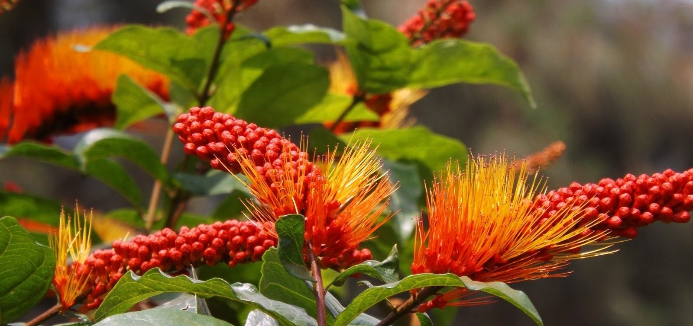
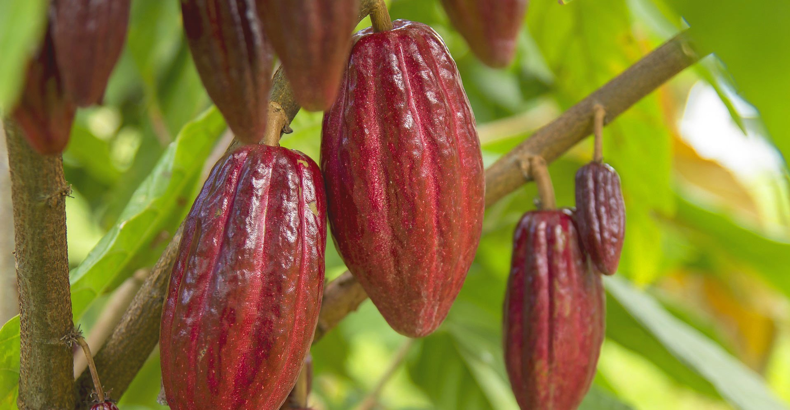
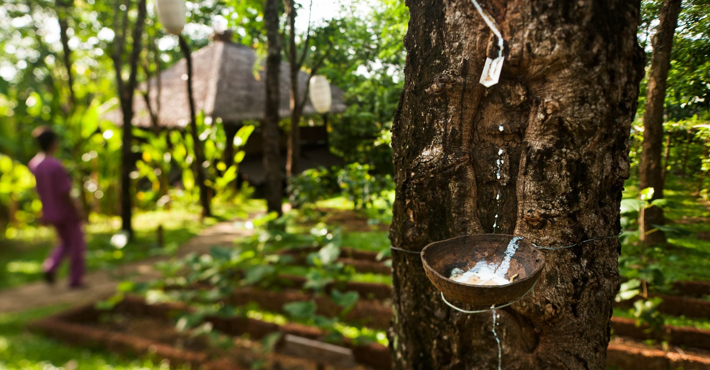
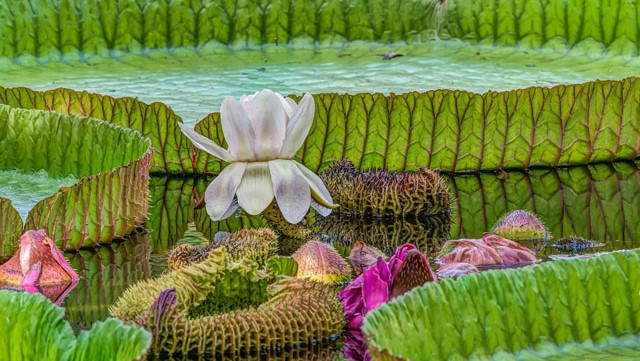

Weirdest Plants

The Monkey Brush is a striking vine native to South America. This exotic plant grows like a parasite on other plants and trees throughout the jungle. The flower acts as a natural feeding source for hummingbirds and a resting spot for green iguanas. The flower is very bright, a vivid orange color that can easily be seen among rainforest greenery. The name Monkey Brush is believed to have come from the flower's long and colorful stamens.

Theobroma cacao (cacao tree or cocoa tree) is a small evergreen tree in the family Malvaceae. Its seeds, cocoa beans, are used to make chocolate liquor, cocoa solids, cocoa butter and chocolate. The largest producer of cocoa beans in 2018 was Ivory Coast, at 2.2 million tons.

Passion flower , (genus Passiflora), also spelled passionflower, genus of more than 500 species of mostly tendril-bearing vines in the family Passifloraceae and their characteristic flowers. Most species are found throughout neotropical regions of the Americas. Some are cultivated as ornamentals, while others are grown for their edible fruits. Many are important larval host plants to butterflies.

Rubber tree, (Hevea brasiliensis), South American tropical tree of the spurge family (Euphorbiaceae). It has soft wood; high, branching limbs; and a large area of bark. The milky liquid (latex) that oozes from any wound to the tree bark contains about 30 percent rubber, which can be coagulated and processed into solid products, such as tires. Latex can also be concentrated for producing dipped goods, such as surgical gloves.

Famous for its enormous leaves, which allow it to absorb as much sunlight as possible, giant water lily's individual leaves can grow 4-6 feet in diameter. Supported by large spongy veins, the leaves have upturned edges and the leaf underside (and stem) are covered in sharp spines, as a possible defense against herbivores such as fish and manatees.